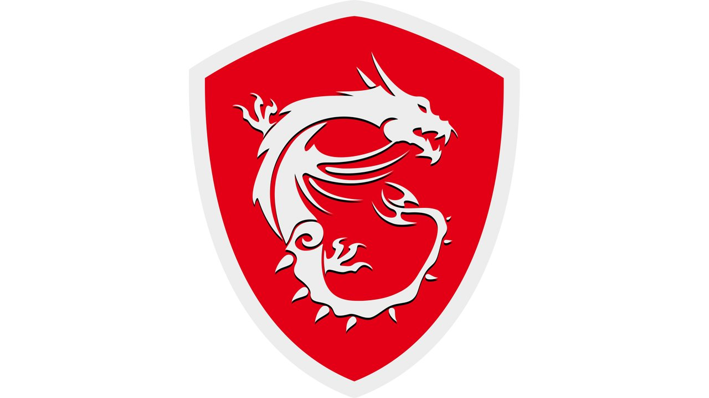
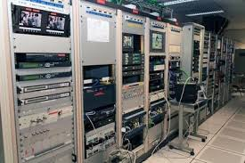
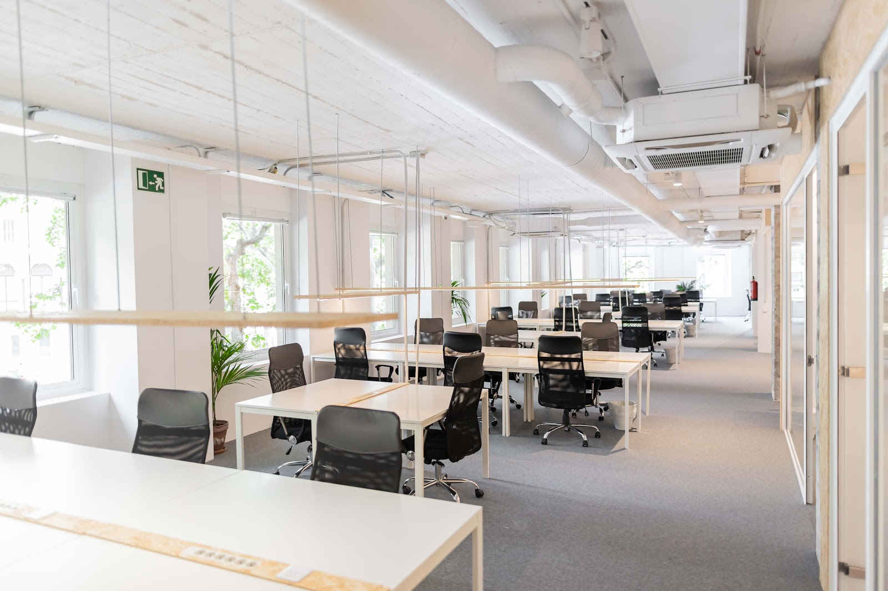
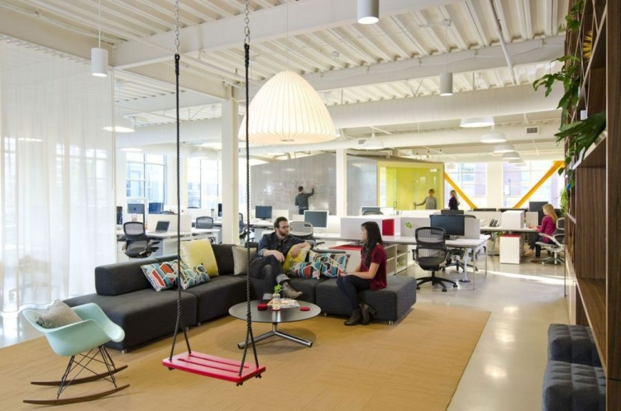
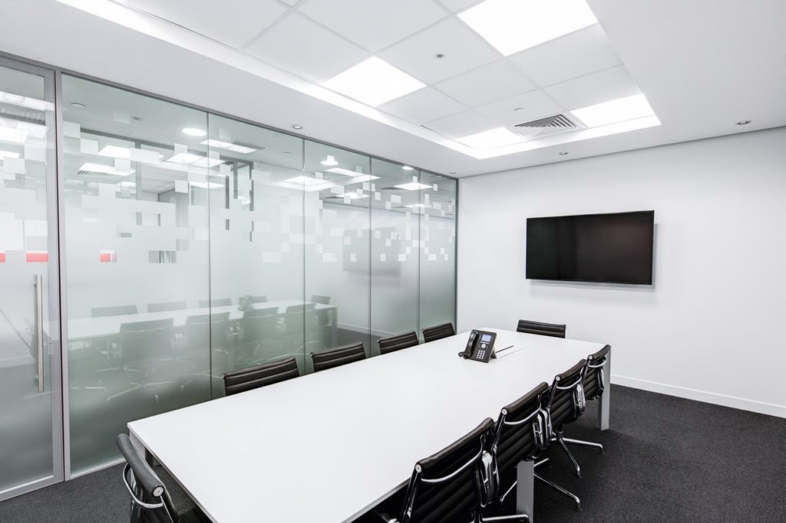
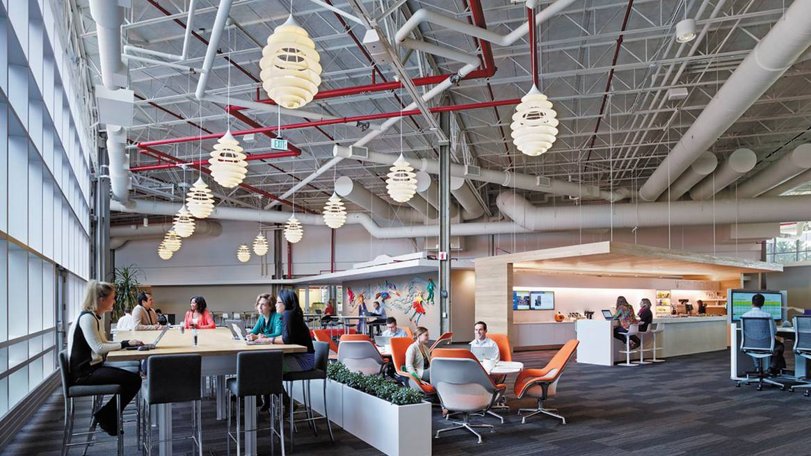
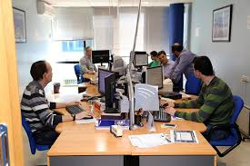

Sobre Nosotros
Nuestra empresa
Es una de las empresas distribuidoras de tecnología personal más importante del mundo, que fabrica innovadores equipos PC y dispositivos móviles de Internet. Ahora, la número 286 en la lista Fortune 500. Nuestra enpresa es la mayor fabricante mundial de PC y el cuarto en smartphones. Aunque la marca Lenovo apareció en el mercado en 2004, la empresa tiene una historia mucho más larga. En 1984, se fundó Legend Holdings con 200 000 RMB (25 000USD) en un cuartel de China. La compañía se constituyó en Hong Kong en 1988 y creció hasta convertirse en el principal fabricante de PC de China. Legend Holdings cambió su nombre por el de Lenovo en 2004 y, en 2005, adquirió la antigua división de ordenadores personales de IBM, la compañía que inventó la industria de los PC en 1981.
Historia
Las raíces de nuestra empresadatan desde la década de 1880, décadas antes del desarrollo de los ordenadores electrónicos. Desde la década de 1960 o antes, IBM ha descrito su formación como la fusión de tres compañías: laTabulating Machine Company (con orígenes en Washington, DC en la década de 1880), la International Time Recording Company (fundada 1900 en Endicott), y la Computing Scale Company (fundada en 1901 en Dayton, Ohio, EE.UU.).67 La fusión fue diseñada por el financiero Charles Flint, y la nueva compañía se llamó la Computing Tabulating Recording (CTR) Company.8 CTR se constituyó el 16 de junio de 1911 en Endicott, Nueva York, EE.UU..
Curiosidades
El mundo de la informática está lleno de anécdotas y curiosidades. No podría ser de otra forma, siendo un ambiente tan dinámico y que, a día de hoy, interesa en todo el planeta (bueno, excepto en Sentinel del Norte, ahí no parece que les interese demasiado). Lo cierto es que, independientemente de lo que opinen los habitantes de Sentinel del Norte, la informática interesa hoy en día a personas de todas las edades y de todos los ámbitos.


Nuestras instalaciones de la Sede Central:
|  |  |  |  |
|---|---|---|---|
| Oficinas | Oficinas de atencios y servicios remotos | Area de descanso | Sala de reuniones |
Colaboraciones
MSI
El núcleo de la innovación de MSI sigue siendo un firme compromiso de proporcionar al mejor jugador los mejores productos. Aparte de su asociación con 12 equipos pro-gaming de todo el mundo, MSI también es un participante activo en los torneos internacionales gaming y el anfitrión de Beat It, un evento gaming de renombre a nivel mundial. Emocionante en la calidad y rendimiento, la serie MSI GAMING ha sido probada para satisfacer las necesidades más exigentes del torneo, sacando el mejor rendimiento de los pro-gamers y llevarlos a una victoria tras otra en la escena mundial de eSports. Todas las cuentas anteriores para equipos dominantes y gamers profesionales crearon y tomaron la decisión de elegir la serie MSI GAMING que ayuda a conseguir una mayor posición en el campeonato mundial.
ASUS
Asus fue fundada en Taipéi en 198911 por T.H. Tung, Ted Hsu, Wayne Hsieh y M.T. Liao,12 Los cuatro que habían trabajado previamente en Acer como ingenieros en hardware. Hasta ese entonces, Taiwán aún no había establecido una posición de liderazgo en el negocio de hardware para computadora. Intel Corporation suministraba nuevos procesadores a empresas más establecidas, como IBM primero, y las empresas taiwanesas tendrían que esperar aproximadamente seis meses después de que IBM recibiera su prototipo de ingeniería.
GYBATYE
Una característica clave de Gigabyte que se remonta al 2006 fueron sus tarjetas madre ultra-duraderas, anunciadas con "todos los condensadores sólidos".6 El 8 de agosto de 2006, Gigabyte anunció una empresa conjunta con Asus.7 Gigabyte desarrolló la primera Fuente de alimentación controlada por software del mundo en julio de 2007,8 la Serie ODIN GT.9

